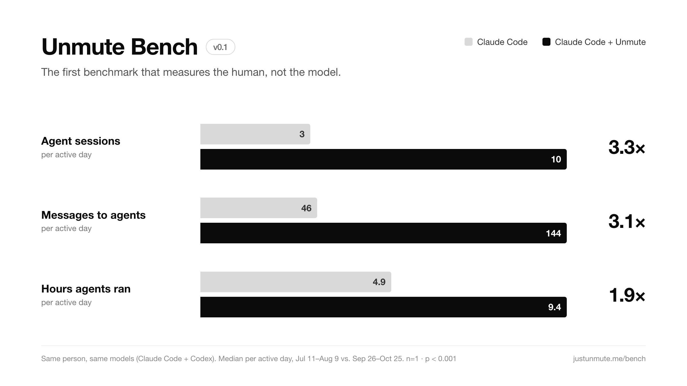

Unmute Benchv0.1
The first benchmark that measures the human, not the model.
Maintained by Unmute · October 2026 · Open source (MIT)
Why a benchmark for humans
Models are benchmarked to death. SWE-bench, Terminal-Bench, ARC: every launch comes with a chart. Nobody measures the other half of the system: the person handing the work over.
Models got far better this year. Most people did not get far better at using them. They still type one prompt into one terminal, wait, and read. The bottleneck has moved from the model to the human, and to the interface between them.
Unmute Bench measures that interface. It asks one question: how much work do you actually hand to your agents? It is computed from logs that Claude Code and Codex already keep on your computer, so nothing has to be self-reported and nothing leaves your machine.
Leaderboard
Setups are ways of working with agents, not models. Median per active day.
| # | Setup | SPD | MPD | AHD | People |
|---|---|---|---|---|---|
| 1 | Claude Code + Codex, via Unmute | 10 | 144 | 9.4 | 1 |
| 2 | Claude Code + Codex, desktop apps | 3 | 46 | 4.9 | 1 |
| — | Claude Code / Codex, terminal | — | — | — | open |
| — | Cursor | — | — | — | open |
| — | Other orchestrators | — | — | — | open |
v0.1 is preliminary: both rows come from one person's history. Open rows fill in as results are submitted. Add yours.
Metrics
An active day is a day with at least one message to an agent. Daily metrics count active days only, so days off never count against anyone.
| Code | Metric | What it captures |
|---|---|---|
| SPD | Agent sessions per active day | How much work you start |
| MPD | Messages to agents per active day | How often you reach your agents |
| AHD | Hours agents ran per active day | How long your agents are working for you |
| JPH | Agents steered per active hour | How many agents you juggle at once |
| PAR | Agents running at once | Parallelism |
| AD | Active days per window | Consistency |
| TTW | Task types per week (of 6) | Breadth: code, research, comms, content, personal, other |
Method
Claude Code transcripts, Codex rollouts, and Unmute's session index if present. Only your own messages are read: timestamp and opening text. Never agent replies or files.
Machine-written messages are dropped. Re-runs of the same prompt count once. Bursts (four sessions started within a minute) are dropped. Non-interactive codex exec runs are excluded.
Median, trimmed mean and p90 per active day. No means, no peaks: one burst can move those on its own.
One-sided rank-sum permutation test (Mann–Whitney) on daily sessions and messages, 20,000 seeded relabellings, so the same logs always give the same p.
Full definitions and every threshold: METHODOLOGY.md.
Reference result

| Metric | Before | With Unmute | Change |
|---|---|---|---|
| SPD · agent sessions | 3 | 10 | 3.3× |
| MPD · messages to agents | 46 | 144 | 3.1× |
| AHD · hours agents ran | 4.9 | 9.4 | 1.9× |
| JPH · agents steered per hour | 1 | 3 | 3.0× |
| PAR · agents at once | 1 | 2 | — |
| AD · active days of 30 | 21 | 29 | — |
| TTW · task types per week | 3.4 | 5.4 | — |
Jul 11 – Aug 9 vs. Sep 26 – Oct 25, 2026. Same person, same models. p < 0.001 for SPD and MPD. 3,062 sessions read; 87 bursts, 1,762 repeats and 160 automated sessions removed.
Limitations
- n = 1. The reference result is one person. It shows a large, significant change for that person, not a population effect. That is why the scorer is open.
- Usage, not value. The bench measures how much work is handed to agents, not whether it was good. More messages can mean more corrections.
- Before/after is not a controlled experiment. Workloads and habits change too.
- History gets pruned. Claude Code deletes transcripts after about 30 days, which can thin out a "before" window.
- Some values are estimated. AHD and PAR are inferred from your messages, not from agent activity. Task types are keyword-classified.
Run it on your logs
One command. Runs locally, reads only your own messages, uploads nothing.
curl -fsSL https://justunmute.me/unmute-bench.mjs | node --input-type=module -It's one self-contained file with no dependencies. Read it before you run it, or read the source on GitHub. To compare before and after a change (a new tool, a new workflow), download it once:
curl -fsSL https://justunmute.me/unmute-bench.mjs -o unmute-bench.mjs
node unmute-bench.mjs --split 2026-08-10
node unmute-bench.mjs --card my-bench.png # shareable card
node unmute-bench.mjs --json # for submissionsNode 18+. Reads ~/.claude/projects and ~/.codex. Unmute users also get this inside the app, under Unmute Bench: their own daily numbers and trends, recalculated every few hours.
Submit a result
Run node unmute-bench.mjs --json and open a submission with the output. Only the numbers are needed, never your logs. Tell us your main setup (terminal, desktop app, Cursor, Unmute, other) so your result lands in the right row.
FAQ
Isn't this just measuring usage?
Yes, deliberately. Model benchmarks measure what the model can do. This measures how much of that capability a person actually puts to work. Quality of the output is out of scope for v0.1.
Doesn't the company that makes Unmute win its own benchmark?
On the reference result, yes, which is exactly why the method and the code are public. Run it yourself, on any setup, and submit the numbers.
Does it send my data anywhere?
No. It runs on your machine, reads timestamps and the opening text of your own messages, and prints numbers. Read the code: it is a few hundred lines.
Why per active day?
So weekends and days off don't drag anyone down. The bench measures how you work on the days you work.
What changes in future versions?
More people in the leaderboard, per-setup splits within one person's history, model-labelled task types, and an output-quality signal. Every change bumps the version.
Cite
@misc{unmutebench2026,
title = {Unmute Bench: A Benchmark of Human-to-Agent Work},
author = {Patel, Arpit},
year = {2026},
note = {Version 0.1},
url = {https://justunmute.me/bench}
}Changelog
- v0.1 · October 2026 · First public version: 7 metrics, cleaning rules, rank-sum significance test, reference result.